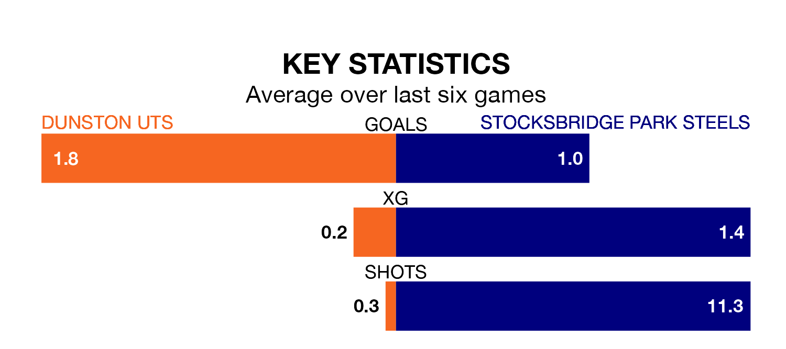

Mid-season relegation candidates Stocksbridge Park Steels face a challenge away against high-flying Dunston UTS on Tuesday.
Stocksbridge Park Steels are 17th in the Northern Premier League Division One – East table, and have picked up five wins and eight draws in their 23 games to date.
Dunston UTS, meanwhile, are third in the standings with 44 points, having won 13 and drawn five of their first 21 matches, and are five points behind table-toppers Stockton Town.
With 27 goals in 23 games so far this season, Stocksbridge are the league's third-lowest scorers with 1.2 goals per game. But they are conceding fewer than average too, letting in 30 goals at a rate of 1.3 per game.
Dunston UTS, meanwhile, are above average scorers, with 1.9 goals per game, compared to a league average of 1.6. They have conceded 0.9 goals per game.
The home team are in good form in the Northern Premier League Division One East, with four wins and two draws from their last six games.
With a win and four draws over that period, the Steels's form is much worse – they have taken seven points from 18, compared to Dunston UTS's 14.
In the last five years, Dunston UTS and Stocksbridge have played each other on four occasions. Dunston UTS won one of them, Stocksbridge two, and they drew once.
On average, Dunston UTS scored 2.5 goals and the Steels 3.0 in those matches.
Their last meeting was on March 21, when they played out a 2-2 draw.
Dunston UTS's last match was on Saturday, a 4-1 win against Ashington AFC.
Stocksbridge drew 1-1 with Brighouse Town last time out, also on Saturday.
Updated: 10:28 (UTC), 06/02/24